トラブルシュート¶
目的¶
症状 → 原因 → 見るファイル の順で、切り分けを速くする。まず docspipeline doctor。
見るポイント¶
最初の三手¶

docspipeline doctor—mmdc・doxygen・Sphinx・環境変数の有無が、一覧で出る (値は出ない)。rm -rf docs/_build docs/_generated docs/_doxygen— キャッシュを消して、もう一度。docspipeline build docs --no-strict— 警告をエラーにせず、全部の警告を読む。
ビルドが失敗した原因を切り分ける
docspipeline build docs が失敗します。原因を切り分けてください。
1. docspipeline doctor を実行し、NG・なし の項目を挙げる。
2. rm -rf docs/_build docs/_generated docs/_doxygen のあと、docspipeline build docs --no-strict で、全部の警告を出す。
3. 警告を種類ごとに分け、docs/learn/07-troubleshooting.md の「症状の一覧」と照らして、原因と直し方を提案する。
4. 提案だけを報告し、私が許可するまで、ファイルは書き換えない。
5. 出力に API トークンなどの値が混ざっていたら、報告に書き写さず、その旨だけを伝える。
症状の一覧¶
症状・メッセージ |
原因 |
見る場所 |
|---|---|---|
Mermaid の図が、コードのまま出る |
|
|
|
Chromium が起動できない。CI ではサンドボックスが原因のことが多い |
|
|
Doxygen が未導入 |
|
|
ヘッダーのコメントの書式の誤り |
該当のヘッダー。メッセージにファイルと行が出る |
|
Doxygen が走っていない ( |
|
|
|
渡したパスを確かめる。CI の設定 ( |
|
|
|
|
意図した動作。公開系のモードは、増分ビルドのキャッシュを使わない ( |
手元で速く確かめたいときは、 |
|
|
メッセージのファイルと行。 |
|
図が画像にならないまま公開すると、Confluence のページが図の無いページに置き換わるため、公開系のモードでは失敗させている |
|
|
|
|
|
モードの綴り間違い (黙って |
|
|
参照先が文書に無い。型変数、外部ライブラリの型など |
|
標準ライブラリの型の警告だけが出る |
外に出られず、intersphinx が読めない |
|
|
|
|
|
Confluence のコードマクロが知らない言語名 |
文書側で |
|
未解決のインラインコメントが付いたページを、更新せずに飛ばした |
Confluence 側でコメントを解決する。意図した動作 |
公開が、親ページの外の同名ページで止まる |
手で作られたページを奪わない設定 ( |
題名を変える ( |
|
Sphinx の環境キャッシュ |
|
図が崩れた¶
python -m pytest -q tests/test_diagrams.py— どのカードが、どれと重なっているかを名前で教えてくれる。生成物が定義とずれた:
python tools/diagrams/build_diagrams.pyで作り直す。
使うときの注意¶
トークンを貼り付けて質問しない。ログを共有するときは、
docspipeline経由の出力 (伏せ字済み) を使う。それでも念のため、CONFLUENCE_API_TOKENの値で検索して、残っていないか確かめる。公開に関わる不具合は、原因が分かるまで
publishを再実行しない。dryrunで再現する。
よくある誤り¶
警告を
--no-strictで 消したまま にする。見るためだけに使い、直したら戻す。キャッシュを消さずに、「直ったはず」と判断する。
関連¶
ビルドの内側 — どの段階で出たメッセージか